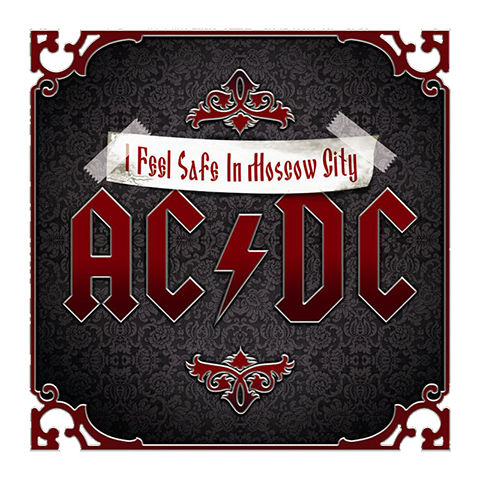

мы рады вас приветствовать на неофициальном сайте группы AC/DC. Здесь представлена информация о создании группы, дискография и концерты.


История создания
Дискография
Концерты

Название
«AC/DC» — аббревиатура от «ток переменный/ток постоянный» (англ. «alternating current/direct current») .Старшая сестра Малколма и Ангуса Янгов, Маргарет предложила название для группы после того, как увидела надпись «AC/DC» на задней стороне швейной машинки (кстати, именно Маргарет предложила Ангусу выступать на сцене в школьной форме).
История создания группы
Братья Ангус (родился 31 марта 1955 года; по требованию компании Atlantic Records годом рождения Ангуса официально указывался неверный 1959), Малколм (родился 6 января 1953 года) и Джордж Янг (George Young) родились в Глазго (Шотландия), но в 1963 году вместе с большей частью семьи уехали в Сидней. Джордж начал играть на гитаре первым и стал членом самой успешной австралийской группы 1960-х, The Easybeats. Это была первая местная рок-группа, которая выпустила хит международного масштаба — «Friday on My Mind» в 1966 году. Малколм вскоре последовал по стопам брата, став гитаристом группы из Ньюкасла The Velvet Underground (не следует путать с нью-йоркским коллективом The Velvet Underground).
Первое выступление
К братьям-гитаристам Малколму (он и инициировал группу) и Ангусу Янгам в ноябре 1973-го добавились вокалист Дейв Эванс (англ. Dave Evans), бас-гитарист Ларри Ван Кридт (англ. Larry van Kriedt) и барабанщик Колин Берджес (англ. Colin Burgess). Дебют квинтета состоялся 30 декабря 1973 года в сиднейском баре Chequers. С этого дня наш сайт празднует день рождения группы AC/DC.
AC/DC - Back To Black
AC/DC - Ruff Stuff
AC/DC - Back To Black
Вернуться на главную страницу